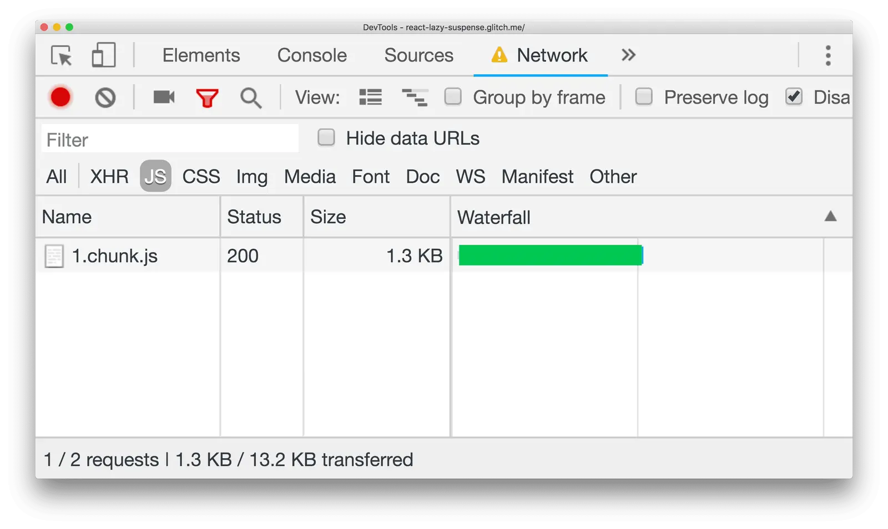

Short answer
A single large JavaScript chunk makes the first load download and parse more than the screen needs.
The network panel shows that one file. Splitting by route can leave the product page’s extra tools in another chunk. The health condition is that the product name and the links are in the HTML, not only in the chunk that was split off. A smaller first chunk that still hydrates an empty shell is a rendering miss.
Definition
The panel screenshot is a tool view of one download. It is not a budget and not a score. Teams should not copy a byte limit from a talk and call it policy. The local question is whether this template’s first response contains its text and whether unused code rides along.
What rendering changes for a crawler
Split unused code out of the first chunk only after the HTML contains the primary text and links.
A route-level split that also code-splits the only copy of the specification table fails the crawl comparison. Put the table in the server HTML, and split the charting library. Re-audit by reading view-source and the network list on one URL.

What to check
- Primary text in the HTML, not only in a chunk
- Libraries for other screens split away
- View-source checked after the split
- One catalog URL as the sample
- No byte-limit slogan used as policy
A practical example
The catalog entry downloads a chunk that includes the 3D viewer, the blog editor, and the product facts. The facts move into HTML. The viewer and the editor move to chunks that load on the screens that use them. The first network list shows a smaller chunk and a document that already names the product.
What this does not claim
Smaller chunks do not guarantee rankings or citations.
Where Mika Visibility files this
Mika Visibility treats rendering as an SEO Health question: can the important HTML be fetched and compared with and without JavaScript when the template depends on it. That comparison is not a GEO audit and not a market-coverage plan. Findings stay attached to sample URLs. A re-audit after the template change is how the team checks the repair.
The network panel shows one chunk so the article can talk about what else should not be inside it.
FAQ
When does splitting JavaScript help?
A single large JavaScript chunk makes the first load download and parse more than the screen needs.
What must the HTML still contain?
Split unused code out of the first chunk only after the HTML contains the primary text and links.
Do smaller chunks guarantee rankings?
Smaller chunks do not guarantee rankings or citations.
Next step
Run a structured SEO + GEO audit to see health findings, growth gaps, and a blueprint you can act on.
Clearer entities, answers, evidence, and context make pages easier to understand and reference. Results in any answer product are not guaranteed.